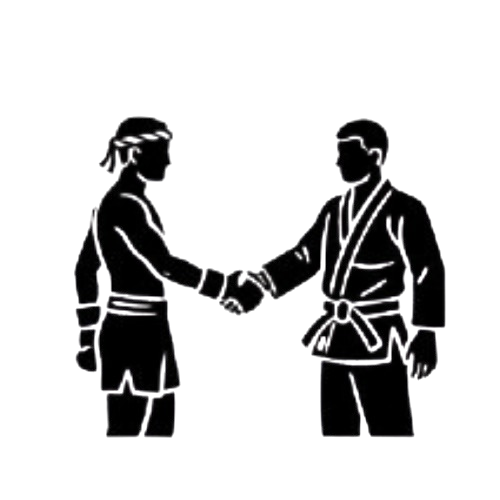

Artes Marciais mudam vidas.


Artes Marciais mudam vidas.
O que é a arte marcial?
As Artes Marciais contem um legado historico que unem técnicas de combate e princípios filosóficos. Nascidas da necessidade de defesa e sobrevivência em civilizações antigas (especialmente no Oriente), elas evoluíram muito além da luta.

As Artes Marciais vão muito alem da luta em si, fortalecem o corpo e, principalmente, a mente. O desenvolvimento de disciplina, respeito e resiliência tambem faz parte disso.

O que é o Jiu Jitsu?
O Jiu-Jitsu é hoje uma das artes marciais mais praticadas no Brasil. Introduzido no país por Mitsuyo Maeda em 1914. Desde então, o Jiu-Jitsu brasileiro evoluiu, ganhou identidade própria e conquistou o mundo. Mais do que uma luta, tornou-se parte da cultura nacional, presente em academias, comunidades e competições internacionais

O Jiu Jitsu vai muito além da luta em si, ele fortalece o corpo e, principalmente, a mente. O desenvolvimento de disciplina, respeito e resiliência também faz parte disso. o Jiu Jitsu tornou-se parte da cultura mundial, presente em academias, comunidades e competições internacionais
Aprenda a pensar dois passos à frente.
Melhore sua sáude fisica e mental
Aprimore autocontrole e sua disciplina
Conquiste confiança para proteger a si e aos seus
Humildade e Respeito
Disciplina e Consistência
Resiliência e Persistência
Vínculos e Lealdade
Confederaçoes Brasileiras de Jiu Jitsu
Federação Internacional de Jiu-Jitsu Brasileiro
A IBJJF é a federação de maior reconhecimento internacional do esporte. Sua função principal é estabelecer e fiscalizar as regras universais do Jiu-Jitsu Brasileiro de competição, padronizando critérios de arbitragem e graduação (faixas) em todo o mundo. A IBJJF organiza os eventos de elite, como o Campeonato Mundial (Mundial IBJJF) nos EUA, e gerencia o sistema de ranking que define os melhores atletas do planeta.

Confederação Brasileira de Jiu-Jitsu
A CBJJ é a filial oficial da IBJJF no Brasil. Sua missão é promover e organizar os principais campeonatos em território nacional, garantindo que sigam as regras internacionais estabelecidas pela IBJJF. O evento mais prestigiado sob sua organização é o Campeonato Brasileiro de Jiu-Jitsu (Brasileiro CBJJ). Ao competir pela CBJJ, o atleta pontua no ranking internacional.

Confederação Brasileira de Jiu-Jitsu Esportivo
A CBJJE é outra entidade brasileira que organiza seus próprios circuitos de competição. Seu foco é promover o Jiu-Jitsu Esportivo por meio de grandes eventos, sendo o mais famoso o Campeonato Mundial de Jiu-Jitsu Esportivo. Embora não esteja diretamente ligada à IBJJF, a CBJJE oferece uma ampla plataforma de competição, com eventos em diferentes estados do Brasil, proporcionando maior volume de oportunidades para atletas nacionais.

Confederação Brasileira de Jiu-Jitsu Olímpico
A CBJJO é uma entidade que promove um circuito de competições de alto nível com um foco na vertente Olímpica do esporte. A confederação é conhecida por organizar o Copa do Brasil Olímpica e outros eventos de grande porte. Ela atrai muitos atletas de destaque, oferecendo uma alternativa robusta e tradicional para quem busca títulos e experiência em diferentes campeonatos nacionais.